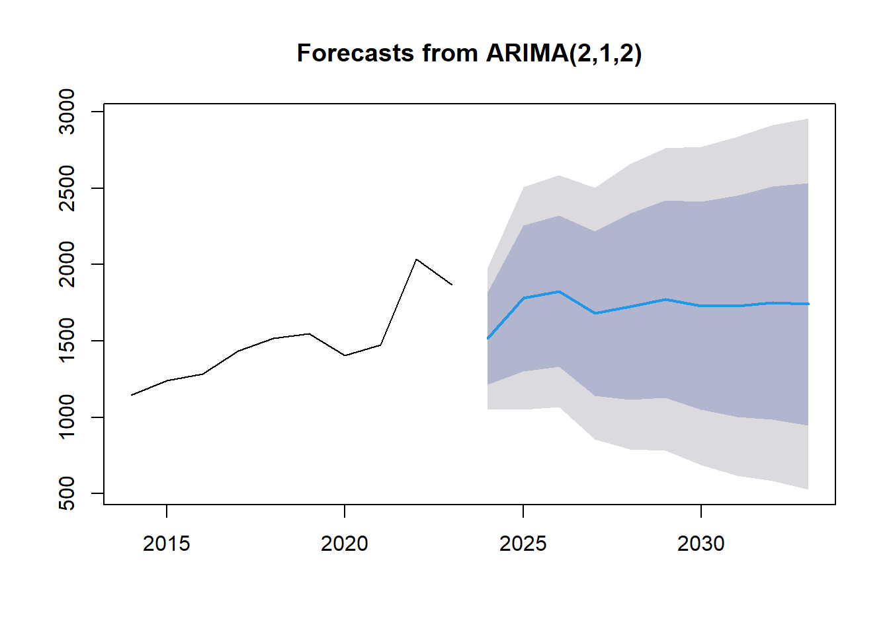
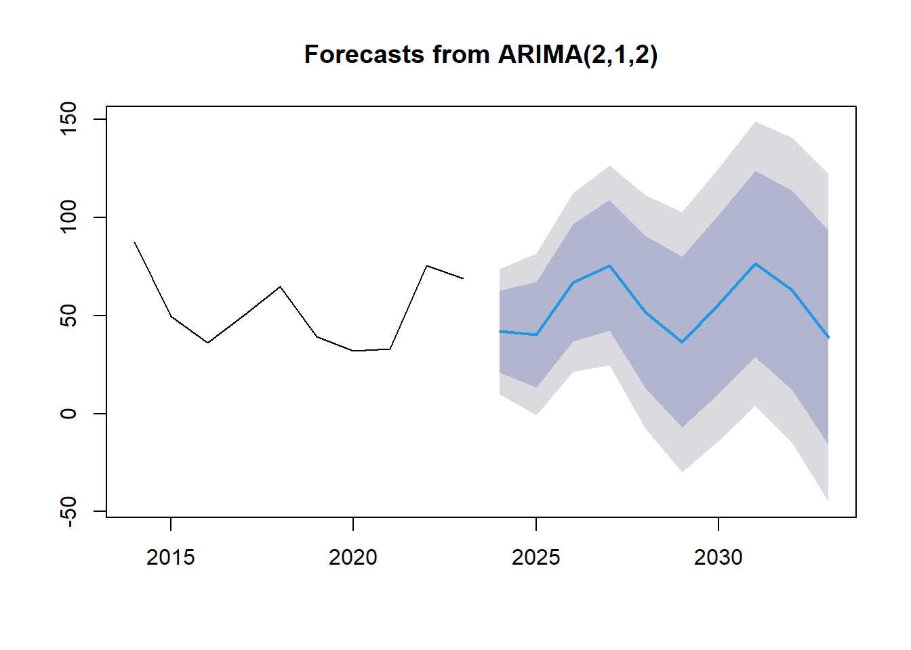
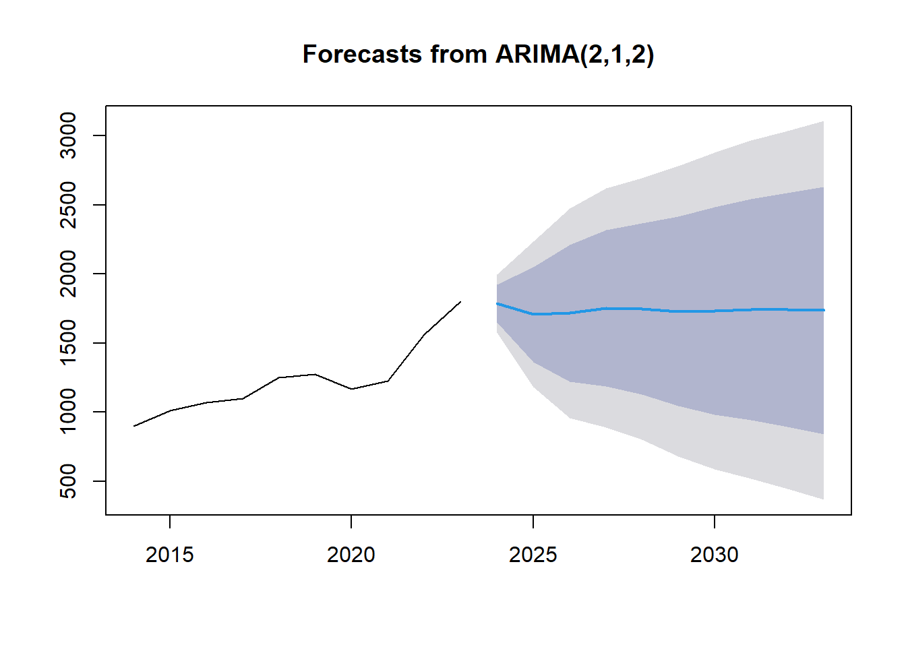
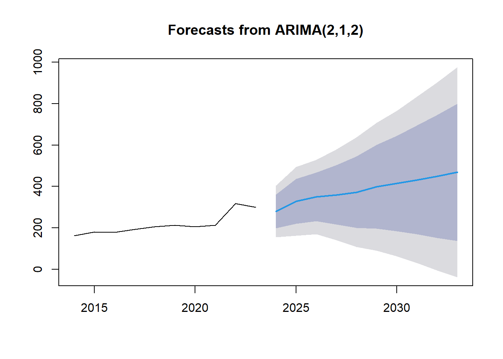

## Point Forecast Lo 80 Hi 80 Lo 95 Hi 95
## 2024 1517.445 1215.5924 1819.298 1055.8011 1979.089
## 2025 1780.302 1303.3278 2257.277 1050.8328 2509.771
## 2026 1826.719 1330.7659 2322.672 1068.2242 2585.214
## 2027 1681.062 1142.2262 2219.897 856.9840 2505.139
## 2028 1725.602 1115.0332 2336.171 791.8176 2659.386
## 2029 1774.229 1126.3080 2422.150 783.3194 2765.138
## 2030 1730.933 1048.9761 2412.889 687.9701 2773.895
## 2031 1727.681 1002.0601 2453.301 617.9398 2837.422
## 2032 1749.666 987.3154 2512.017 583.7513 2915.581
## 2033 1741.166 946.7029 2535.628 526.1396 2956.192
| Point Forecast | Lo 80 | Hi 80 | Lo 95 | Hi 95 | |
|---|---|---|---|---|---|
| 2024 | 1517.445 | 1215.5924 | 1819.298 | 1055.8011 | 1979.089 |
| 2025 | 1780.302 | 1303.3278 | 2257.277 | 1050.8328 | 2509.771 |
| 2026 | 1826.719 | 1330.7659 | 2322.672 | 1068.2242 | 2585.214 |
| 2027 | 1681.062 | 1142.2262 | 2219.897 | 856.9840 | 2505.139 |
| 2028 | 1725.602 | 1115.0332 | 2336.171 | 791.8176 | 2659.386 |
| 2029 | 1774.229 | 1126.3080 | 2422.150 | 783.3194 | 2765.138 |
| 2030 | 1730.933 | 1048.9761 | 2412.889 | 687.9701 | 2773.895 |
| 2031 | 1727.681 | 1002.0601 | 2453.301 | 617.9398 | 2837.422 |
| 2032 | 1749.666 | 987.3154 | 2512.017 | 583.7513 | 2915.581 |
| 2033 | 1741.166 | 946.7029 | 2535.628 | 526.1396 | 2956.192 |
Based on the analysis of the bar graph forecast from ARIMA(2,1,2) for the years 2024-2033, here are suggested steps that companies, institutions, or individuals can take for better decision-making:
Understand the Forecasted Trends: Companies, institutions, and individuals should carefully analyze the forecasted trends depicted in the graph. By understanding the projected values and the associated confidence intervals, stakeholders can anticipate potential future scenarios and make informed decisions.
Evaluate Risk and Uncertainty: Given the varying levels of uncertainty indicated by the shaded areas around the forecasted line, it is crucial to assess the risks associated with the predictions. Decision-makers should consider the potential impact of uncertain factors on the forecasted values and develop risk mitigation strategies accordingly.
Scenario Planning: Engage in scenario planning exercises to explore different possible outcomes based on the forecasted values. By considering multiple scenarios and their implications, organizations can prepare for various future situations and adapt their strategies accordingly.
Strategic Decision-Making: Use the forecasted data as a basis for strategic decision-making. Companies can align their business plans, investment strategies, and resource allocation decisions with the anticipated trends to capitalize on opportunities and mitigate risks.
Continuous Monitoring and Adjustment: Regularly monitor actual performance against the forecasted values and be prepared to adjust strategies as needed. Continuous evaluation and adaptation based on real-time data can help organizations stay agile and responsive to changing market conditions.
Invest in Data Analytics: Enhance data analytics capabilities to improve forecasting accuracy and reliability. By leveraging advanced analytics tools and techniques, companies can generate more precise forecasts and gain deeper insights into future trends.
Collaboration and Communication: Foster collaboration and communication among stakeholders to ensure alignment on decision-making based on the forecasted values. Transparent communication of forecasted data and assumptions can facilitate consensus-building and collective action.
## Point Forecast Lo 80 Hi 80 Lo 95 Hi 95
## 2024 41.82342 20.939840 62.70700 9.8847417 73.7621
## 2025 40.32685 13.351941 67.30175 -0.9277112 81.5814
## 2026 66.69337 36.875799 96.51094 21.0913323 112.2954
## 2027 75.52724 42.276669 108.77781 24.6748799 126.3796
## 2028 51.80136 12.937232 90.66550 -7.6361976 111.2389
## 2029 36.41585 -6.953326 79.78502 -29.9115798 102.7433
## 2030 55.69328 10.166143 101.22041 -13.9344653 125.3210
## 2031 76.34634 28.953283 123.73940 3.8649137 148.8278
## 2032 62.95506 12.169419 113.74069 -14.7148728 140.6250
## 2033 38.71046 -16.077054 93.49798 -45.0798135 122.5007
| Point Forecast | Lo 80 | Hi 80 | Lo 95 | Hi 95 | |
|---|---|---|---|---|---|
| 2024 | 41.82342 | 20.939840 | 62.70700 | 9.8847417 | 73.7621 |
| 2025 | 40.32685 | 13.351941 | 67.30175 | -0.9277112 | 81.5814 |
| 2026 | 66.69337 | 36.875799 | 96.51094 | 21.0913323 | 112.2954 |
| 2027 | 75.52724 | 42.276669 | 108.77781 | 24.6748799 | 126.3796 |
| 2028 | 51.80136 | 12.937232 | 90.66550 | -7.6361976 | 111.2389 |
| 2029 | 36.41585 | -6.953326 | 79.78502 | -29.9115798 | 102.7433 |
| 2030 | 55.69328 | 10.166143 | 101.22041 | -13.9344653 | 125.3210 |
| 2031 | 76.34634 | 28.953283 | 123.73940 | 3.8649137 | 148.8278 |
| 2032 | 62.95506 | 12.169420 | 113.74069 | -14.7148728 | 140.6250 |
| 2033 | 38.71046 | -16.077054 | 93.49798 | -45.0798135 | 122.5007 |
Based on the analysis of the bar graph forecast from ARIMA(2,1,2) for the years 2024-2033, here are suggested steps that companies, institutions, or individuals can take for better decision-making:
Interpret Forecasted Trends: Analyze the forecasted values beyond 2020 to understand the projected trends in the data. Identify any patterns or shifts in the values to anticipate future developments.
Evaluate Confidence Intervals: Consider the shaded blue area around the forecasted line, which represents the confidence intervals. Assess the level of uncertainty associated with the predictions and factor this into decision-making processes.
Risk Assessment and Mitigation: Evaluate the risks associated with the forecasted values and develop mitigation strategies to address potential challenges. Identify key risk factors that could impact the accuracy of the forecasts.
Strategic Planning: Utilize the forecasted data as a basis for strategic planning and decision-making. Align business strategies, resource allocation, and investment decisions with the anticipated trends to optimize outcomes.
Scenario Analysis: Conduct scenario analysis to explore different possible outcomes based on the forecasted values. Develop contingency plans for various scenarios to enhance preparedness and resilience.
Data-Driven Decision-Making: Emphasize data-driven decision-making by leveraging advanced analytics tools and techniques to enhance forecasting accuracy. Invest in data analytics capabilities to improve the reliability of future predictions.
Stakeholder Engagement: Engage stakeholders in discussions about the forecasted trends and involve them in decision-making processes. Foster collaboration and communication to ensure alignment and consensus on strategic actions.
Continuous Monitoring and Adjustment: Continuously monitor actual performance against the forecasted values and be prepared to adjust strategies in response to changing conditions. Stay agile and adaptive to navigate uncertainties effectively.
## Point Forecast Lo 80 Hi 80 Lo 95 Hi 95
## 2024 1785.552 1648.1687 1922.935 1575.4424 1995.661
## 2025 1707.404 1363.2049 2051.603 1180.9969 2233.811
## 2026 1716.554 1219.6208 2213.487 956.5603 2476.548
## 2027 1754.331 1188.4755 2320.186 888.9298 2619.732
## 2028 1748.960 1129.5114 2368.409 801.5949 2696.326
## 2029 1730.722 1044.5478 2416.897 681.3090 2780.135
## 2030 1733.778 983.6115 2483.945 586.4972 2881.059
## 2031 1742.572 941.1490 2543.995 516.9012 2968.243
## 2032 1740.872 892.3939 2589.350 443.2369 3038.507
## 2033 1736.637 840.2898 2632.984 365.7923 3107.482
| Point Forecast | Lo 80 | Hi 80 | Lo 95 | Hi 95 | |
|---|---|---|---|---|---|
| 2024 | 1785.552 | 1648.1687 | 1922.935 | 1575.4424 | 1995.661 |
| 2025 | 1707.404 | 1363.2049 | 2051.603 | 1180.9969 | 2233.811 |
| 2026 | 1716.554 | 1219.6208 | 2213.487 | 956.5603 | 2476.548 |
| 2027 | 1754.331 | 1188.4755 | 2320.186 | 888.9298 | 2619.732 |
| 2028 | 1748.960 | 1129.5114 | 2368.409 | 801.5949 | 2696.326 |
| 2029 | 1730.722 | 1044.5478 | 2416.897 | 681.3090 | 2780.135 |
| 2030 | 1733.778 | 983.6115 | 2483.945 | 586.4972 | 2881.059 |
| 2031 | 1742.572 | 941.1490 | 2543.995 | 516.9012 | 2968.243 |
| 2032 | 1740.872 | 892.3939 | 2589.350 | 443.2369 | 3038.507 |
| 2033 | 1736.637 | 840.2898 | 2632.984 | 365.7923 | 3107.482 |
Based on the analysis of the bar graph forecast from ARIMA(2,1,2) for the years 2024-2033, here are suggested steps that companies, institutions, or individuals can take for better decision-making:
Evaluate Historical Trends: Analyze the historical data points leading up to 2020 to understand past trends and patterns. Identify any key factors that influenced the data and assess their impact on the forecast.
Understand Forecasted Stability: Note the flat forecasted trend from 2020 to 2030 and the increasing uncertainty represented by the shaded area. Consider the implications of a stable forecast and plan accordingly for potential changes.
Risk Management: Assess the increasing uncertainty in the forecast and develop risk management strategies to mitigate the impact of unexpected events or fluctuations. Identify potential risks that could affect the forecasted values.
Resource Allocation: Use the forecasted values as a guide for resource allocation and investment decisions. Allocate resources based on the anticipated trends to optimize performance and achieve strategic objectives.
Scenario Planning: Conduct scenario planning exercises to explore different outcomes based on the forecasted values. Develop contingency plans for various scenarios to enhance preparedness and flexibility.
Communication and Collaboration: Foster open communication and collaboration within the organization or institution to ensure alignment on decision-making processes. Engage stakeholders in discussions about the forecasted trends and solicit input for informed decisions.
Continuous Monitoring: Continuously monitor the actual performance against the forecasted values and adjust strategies as needed. Stay vigilant to changes in the external environment and be prepared to adapt to evolving circumstances.
Data-Driven Decision-Making: Emphasize data-driven decision-making by leveraging advanced analytics tools and techniques to enhance forecasting accuracy. Invest in data analytics capabilities to improve the reliability of future predictions.
## Point Forecast Lo 80 Hi 80 Lo 95 Hi 95
## 2024 279.5619 197.7590 361.3648 154.455159 404.6686
## 2025 327.9734 219.4757 436.4711 162.040492 493.9063
## 2026 349.9231 232.2333 467.6130 169.932097 529.9142
## 2027 360.1121 216.8533 503.3709 141.016669 579.2075
## 2028 372.7788 199.5139 546.0438 107.792931 637.7647
## 2029 398.9349 197.0081 600.8618 90.114430 707.7554
## 2030 414.4186 184.8535 643.9837 63.329083 765.5081
## 2031 431.9873 169.1715 694.8031 30.045203 833.9294
## 2032 448.7993 152.2780 745.3205 -4.690823 902.2894
## 2033 468.9264 137.1886 800.6641 -38.422702 976.2754
| Point Forecast | Lo 80 | Hi 80 | Lo 95 | Hi 95 | |
|---|---|---|---|---|---|
| 2024 | 279.5619 | 197.7590 | 361.3648 | 154.455159 | 404.6686 |
| 2025 | 327.9734 | 219.4757 | 436.4711 | 162.040492 | 493.9063 |
| 2026 | 349.9231 | 232.2333 | 467.6130 | 169.932097 | 529.9142 |
| 2027 | 360.1121 | 216.8533 | 503.3709 | 141.016669 | 579.2075 |
| 2028 | 372.7788 | 199.5139 | 546.0438 | 107.792931 | 637.7647 |
| 2029 | 398.9349 | 197.0081 | 600.8618 | 90.114429 | 707.7554 |
| 2030 | 414.4186 | 184.8535 | 643.9837 | 63.329083 | 765.5081 |
| 2031 | 431.9873 | 169.1715 | 694.8031 | 30.045203 | 833.9294 |
| 2032 | 448.7993 | 152.2780 | 745.3205 | -4.690823 | 902.2894 |
| 2033 | 468.9264 | 137.1886 | 800.6641 | -38.422702 | 976.2754 |
Based on the analysis of the bar graph forecast from ARIMA(2,1,2) for the years 2024-2033, here are suggested steps that companies, institutions, or individuals can take for better decision-making:
Historical Data Review: Analyze the historical data up to 2020 to identify trends and patterns that can provide insights into future forecasts.
Forecast Understanding: Understand the forecasted values from 2020 to 2030 and the associated confidence interval. Recognize the increasing uncertainty in the forecast as time progresses.
Risk Assessment: Evaluate the potential risks associated with the forecasted values and develop risk mitigation strategies to address uncertainties.
Resource Planning: Utilize the forecasted values to allocate resources effectively and make informed decisions about investments and operational strategies.
Scenario Analysis: Conduct scenario analysis based on different outcomes of the forecast to prepare for various potential situations and develop contingency plans.
Stakeholder Engagement: Engage stakeholders in discussions about the forecasted trends and involve them in decision-making processes to ensure alignment and collective understanding.
Monitoring and Adaptation: Continuously monitor actual performance against the forecasted values and be prepared to adapt strategies based on changing circumstances.
Data-Driven Decisions: Emphasize data-driven decision-making by leveraging advanced analytics tools to enhance forecasting accuracy and improve strategic planning.
Copyright © 2024 TaxVisionary, Inc. All rights reserved.